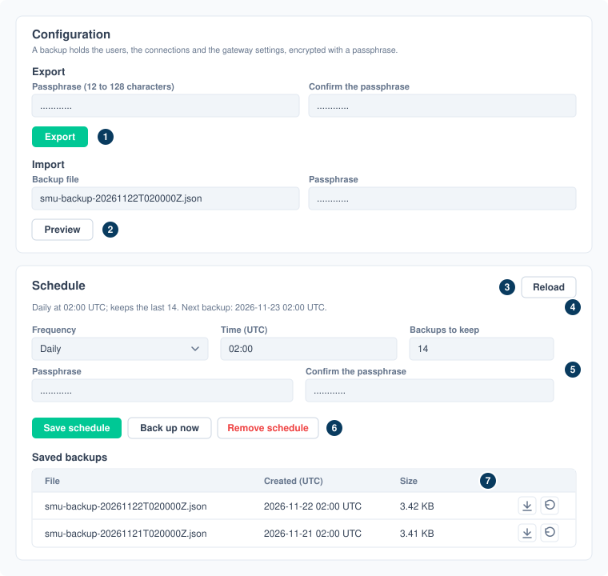
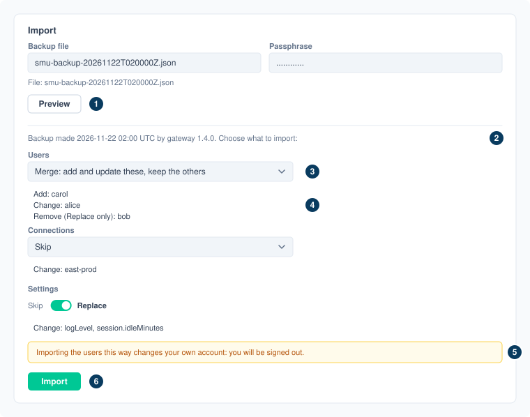
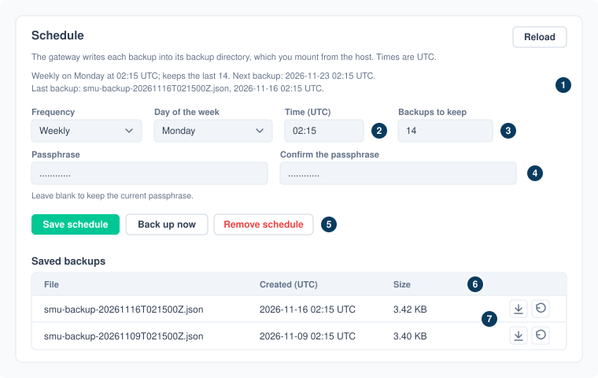

Keep a copy of the gateway's users, connections and settings, and bring one back. You can export a copy by hand, restore from a file, and let the gateway write a backup on a schedule.
Backup & Restore is part of the administration app at /solAdmin, and it needs an administrator's session. Without one the page shows Administrator Sign-in Required, with the line Sign in as an administrator to back up or restore the gateway configuration. in place of everything below. If your session ends or you lose your administrator rights while the page is open, it clears the passphrases you typed and the file you chose, and shows the same card.
A backup is one file, sealed with a passphrase that you choose. It holds three things:
A backup does not hold the audit trail, the queues or messages on your brokers, or a session. It opens on any gateway, whatever that gateway's own keys are. The passphrase is the only key: without it, nobody can open the file, and the gateway cannot tell it to you.
The page has two cards. Configuration exports and imports by hand. Schedule sets the backups the gateway writes by itself, and lists the files they leave.

Use Export to take a copy of the configuration as it stands, for example before a change or before you replace the gateway. The copy is a file that your browser saves.
smu-backup-20261122T020000Z.json: the date and time of the export in UTC. A toast says Exported followed by the file name.After a successful export the page clears both passphrase fields. It keeps no passphrase: each action sends the one you typed for it.
If the two fields differ, the page says The passphrases do not match. and sends nothing. If the passphrase is shorter than 12 or longer than 128 characters, the gateway refuses with The passphrase must be 12 to 128 characters.
Restoring is two steps. Preview opens the file and shows what an import would change, and changes nothing. You then choose, for each part, what to import, and press Import.

.json file of at most 8 MiB, the most the gateway accepts in one import. The page then shows File: and the file's name. To restore a backup the gateway wrote itself, use its restore icon in Saved backups instead: the page then shows Saved backup: and the name, and puts the cursor in the passphrase box.Import users (merge), settings (replace) from this backup? The gateway applies it at once. Press Import in that box to go on, or cancel.| Part | Choice | What the gateway does |
|---|---|---|
| Users, Connections | Skip | Leaves the part as it is. |
| Users, Connections | Merge: add and update these, keep the others | Adds the backup's records, and replaces any record that has the same name. Records that the backup does not hold stay. Users are matched by user name, connections by broker name. |
| Users | Replace: these users only | Makes the user list exactly the backup's. A user the backup does not hold is removed. |
| Connections | Replace: these connections only | Makes the connection list exactly the backup's. A connection the backup does not hold is removed. |
| Settings | Skip or Replace | Replaces every setting with the backup's. There is no merge for settings. |
The list under each choice has up to three kinds of line: Add: names that are not there yet, Change: names whose record differs, and Remove (Replace only): names that only Replace would delete. For settings the line is Change: and the settings keys that differ, such as logLevel. A part with nothing to do says No change.
The gateway imports the parts you chose together, or none of them. If one of them is refused, nothing is imported.
An import ends the sessions of the users it changes in these ways: the user is removed, or the backup changes their password hash or whether they are an administrator, or it adds, removes or replaces their two-factor secret. Those users sign in again. A change to the recovery codes alone does not end a session. A user the import adds has no session to end.
Two-factor is restored as the file holds it. A user whose record in the backup has no two-factor ends up without it, and a user whose record has it ends up with the secret and the unused recovery codes in the file. An import changes nothing else about two-factor. A backup without the two-factor mode reads as optional, so importing its settings with Replace sets the mode to optional: check the mode afterwards; the Gateway Settings chapter describes it.
When the import would change your own account, a banner appears under the users choice: Importing the users this way changes your own account: you will be signed out. It shows only for the users choice that would do this: Merge and Replace are checked separately. After such an import a toast says Imported. Your own account changed: sign in again. and the app signs you out. After any other import the toast says Imported, and the page clears the file and the passphrase and reloads the schedule.
The backup's settings and the way it treats two-factor are described for the operator in Backups and two-factor.
The preview is a picture of the gateway at one moment. If anyone changes the users, the connections or the settings (a password change counts) after the preview, and before you press Import, the gateway refuses the import for the parts that changed. The page hides the preview and says The gateway's data changed since the preview. Run the preview again. The file and passphrase stay filled in. Press Preview again, read the list and choose again.
The gateway can write a backup by itself. Each one is sealed with the schedule's passphrase, so nobody has to be signed in. The gateway writes the files into its backup directory, which the operator mounts from the host so that the files stay outside the container. The operator's side is in Back up and restore. All times on this card are UTC.

Above the form the page tells you where the schedule stands:
No schedule: the gateway writes no backups until you save one.Weekly on Monday at 02:15 UTC; keeps the last 14., then Next backup: and the time.Last backup: the file name and the time, or Last backup, the time, failed: and the reason. The gateway keeps the last run in memory, so a restart of the gateway clears it.When the gateway cannot write to its backup directory, a banner under the heading says why. The reason is one of these:
/backup does not exist. Mount a directory there to keep backups outside the container./backup is not a directory. Mount a directory there.Cannot read /backup: and the system's reason./backup is not writable, followed by a hint about who owns the directory when the gateway can tell.While the directory has a problem the list of saved backups says The backup directory cannot be read. Fix it on the host; the operator's guide shows how. Reload checks again.
Schedule saved, the page clears the passphrase boxes, and the status shows the next run.| Field | Shown for | What it takes | Default |
|---|---|---|---|
| Frequency | Every schedule | Hourly, Daily, Weekly or Monthly. | Daily |
| Minute past the hour | Hourly | A whole number from 0 to 59. | 0 |
| Time (UTC) | Daily, weekly and monthly | A time of day, in UTC. | 02:00 |
| Day of the week | Weekly | Sunday to Saturday. | Sunday |
| Day of the month | Monthly | A whole number from 1 to 31. A month without that day backs up on its last day. | 1 |
| Backups to keep | Every schedule | A whole number from 1 to 365. After each backup the gateway deletes the oldest ones beyond this number. | 14 |
| Passphrase and Confirm the passphrase | Every schedule | 12 to 128 characters, the same in both boxes. Under the box the page says Required: every scheduled backup is encrypted with it. when there is no schedule, and Leave blank to keep the current passphrase. when there is one. | Empty |
The gateway lists and deletes only the files it wrote itself, named like smu-backup-20261122T020000Z.json. It leaves any other file in the directory alone. A change of passphrase applies to the backups written from then on. The files already saved stay sealed with the passphrase they were written with.
Press Back up now to write a backup at once, with the saved schedule and its passphrase. Edits you have made in the form but not saved do not count, and they stay in the form. The button is greyed out while there is no schedule. A toast says Backup written: and the file name, and the status and the list refresh. If the gateway cannot write the file, the reason shows above the buttons and the status line records the failed run. Two backups made in the same second would share a name, so a second press within a second can fail with a message that asks you to wait a second and run it again.
Press Remove schedule to stop the scheduled backups. A box asks Remove the backup schedule? The saved backups stay. Press Remove to go on. A toast says Schedule removed. The files in the backup directory stay where they are. The button is greyed out while there is no schedule.
The list shows the files the gateway has written, newest first: File, Created (UTC) and Size. Each row ends with two icons:
Download "file name" when you point at it. Your browser saves the file as the gateway wrote it. It is still sealed with the schedule's passphrase.Restore "file name". It fills the Import form in the Configuration card with this backup, so that you only type the passphrase and press Preview. See Restoring from a file, above.With no files the list says No saved backups yet. The page offers no way to delete a single backup. The gateway deletes the oldest ones itself, as Backups to keep says.
Reload fetches the schedule and the list again. It also fills the schedule fields with the saved schedule, so use it to drop edits you have not saved.
Two administrators can edit the schedule at the same time. The gateway keeps the first save and refuses the second, so that nobody overwrites a change they never saw:
This schedule was changed by someone else since you opened it. Press Reload to see the current schedule, or cancel to keep your edits.Someone else saved a schedule since you opened this page. It is shown now; change it if you still want to. and shows theirs.This schedule was deleted by someone else. and the page reloads.A refusal shows in red in the card it belongs to: under the Export form, under the Import form (above Preview), above the schedule buttons, or, for loading and downloading, under the heading of the Schedule card.
| Message | What it means and what to do |
|---|---|
The passphrases do not match. | The two passphrase boxes differ. Type the same text in both. |
The passphrase must be 12 to 128 characters. | The passphrase is too short or too long. Applies to an export, to a schedule, and to opening a file. |
Choose a backup file, or a saved backup below. | You pressed Preview with no file chosen. |
smu-backup-20261122T020000Z.json is larger than the 8 MiB the gateway accepts in one import. | The file you chose, whose name the message gives, is too big. A real backup is far smaller: check that you chose the right file. |
This is not a Solace Message Utility backup file. | The file is not a backup made by this application. |
This backup file is damaged. | The file is cut short or has been edited. Use another copy. |
This backup has format version N, which this gateway does not read. | The file's format is one this gateway cannot open. N is the file's version. |
The passphrase does not open this file, or the file is damaged. | Check the passphrase, letter case included. If it is right, the file is damaged. |
There is no backup named "name". | A saved backup you chose is not in the backup directory. Press Reload and choose from the list. |
Choose at least one section to import. | All three choices are Skip. Choose Merge or Replace for at least one. |
The backup's users cannot be imported: a reason | The users in the backup break a rule the gateway applies to its own users. The reason says which. The same holds for The backup's connections cannot be imported:. |
At least one administrator must remain. | The users you chose would leave the gateway with no administrator. Choose Merge, or use a backup that holds an administrator. |
This allow list would deny your own address (203.0.113.7). Add it, or a range that contains it. | The backup's settings carry an access list that would lock your browser out. The gateway gives a similar reason, The gateway cannot tell your address, so this allow list would deny this browser., when it cannot tell your address. Choose Skip for the settings and import the other parts. |
| A reason about a setting | The gateway refuses settings that it would not accept at start, for example settings that would turn Provisioned mode off. The reason says which setting and why. Choose Skip for the settings. |
The gateway's data changed since the preview. Run the preview again. | See "When the data changes during a preview", above. |
| Message | What it means and what to do |
|---|---|
Enter a time. | The time box is empty. Give a time of day. |
Enter whole numbers. | A minute, a day of the month or Backups to keep is empty or not a whole number. |
The minute must be 0 to 59. | The minute is out of range. |
The day of the month must be 1 to 31, and only a monthly schedule takes one. | The day of the month is out of range. |
Keep 1 to 365 backups. | Backups to keep is out of range. |
A new schedule needs a passphrase. | You saved a schedule that does not exist yet with the passphrase boxes blank. Type a passphrase. |
A reason that names a file or the directory, such as already exists; wait a second and run it again | A run failed, and the message is the gateway's own reason. Read it, fix the cause (often the backup directory), and press Back up now again. The gateway's log has the detail. |
| Message | What it means and what to do |
|---|---|
Your session has ended. Sign in again. | The gateway ended your session. The message is a toast, and the app returns to the sign-in. |
You must change your password before you continue. | Your own password is due for a change. Change it on the gateway's sign-in page, then return. |
This needs an administrator. | Your account does not have administrator rights. |
The gateway rejected the request as malformed. | The gateway could not read what the page sent. Reload the page and try again. |
The gateway refused a cross-site request. | The page was opened from another address than the gateway's own. Open /solAdmin on the gateway's address and try again. |
Not found. It may already have been removed. | What you asked for is not there, for example a saved backup that has been deleted since the list loaded. Press Reload. |
Too many requests. Wait a minute and try again. | The gateway refused because requests came too fast. Wait a minute. |
The request is too large. | The request is larger than the gateway accepts. |
This was changed by someone else since you opened it. Reload to see the current version. | Another administrator saved first. Press Reload. |
The page did not send the version it was working from, so the gateway refused the change. Reload the page and try again. | Reload the page. |
A data file (users, connections or backup settings) was edited on the gateway host since the gateway loaded it. Restart the gateway to load that edit, then make your change here. | A file on the gateway's host was changed outside these pages. The operator must restart the gateway before the change can go through. |
config.yaml was edited on the gateway host since the gateway loaded it. Restart the gateway to load that edit, then make your change here. | The same, for the settings file. It can appear when you import settings. |
The gateway cannot read its config.yaml. Its log has the cause. | The gateway cannot read its settings file. Tell the operator. |
The gateway could not write its data files, so nothing was changed. Its log has the cause. | Nothing was imported or saved. Tell the operator. |
The gateway cannot write its audit log and is set to refuse changes until it can. Its log has the cause. | An import or a schedule change is refused while the audit log cannot be written. Tell the operator. |
The gateway could not complete the request. Its log has the cause. | An error inside the gateway. Tell the operator. |
The gateway sent a response this page cannot read. | Something between your browser and the gateway answered in place of it. Try again, and tell the operator if it persists. |
The gateway could not be reached. | The page could not contact the gateway. Check your network and try again. |
The gateway did not answer in time. If this was a change, it may still have been applied: reload to see where it stands before you try again. | Press Reload and check before you repeat an import or a save. |